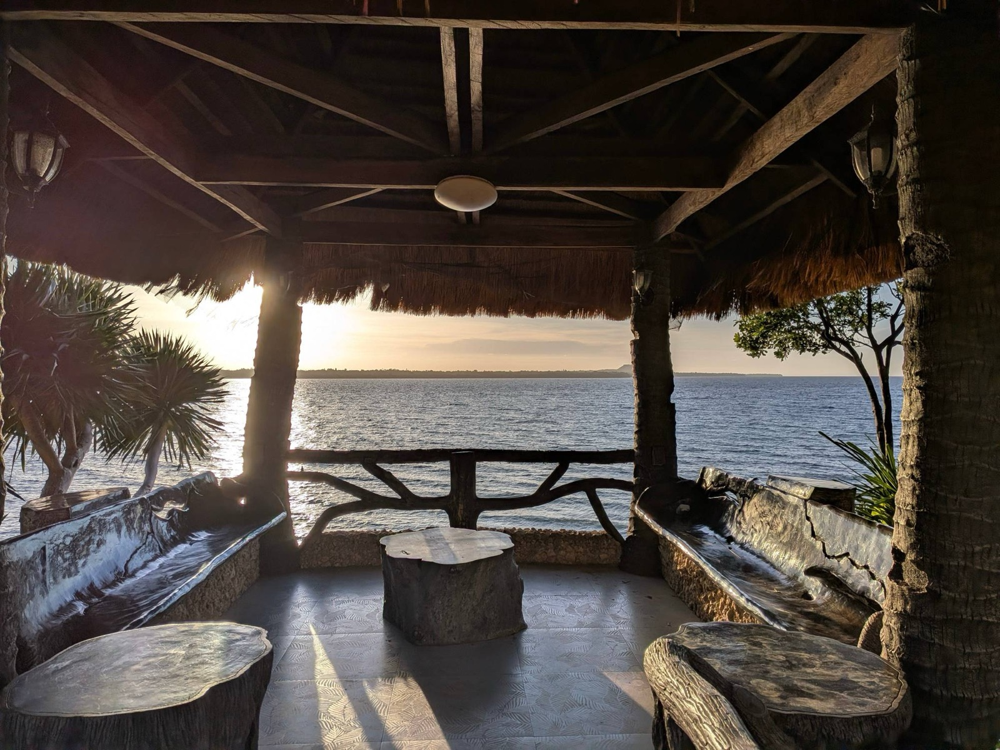
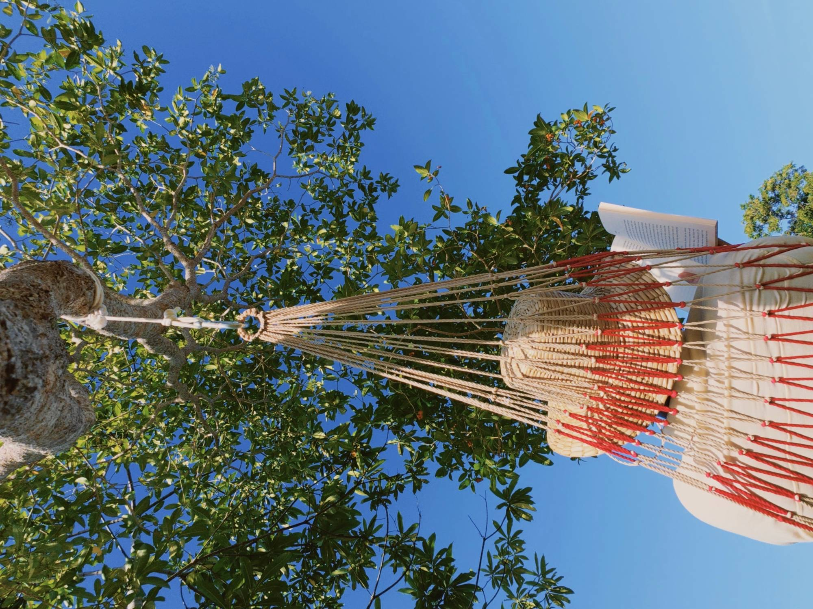
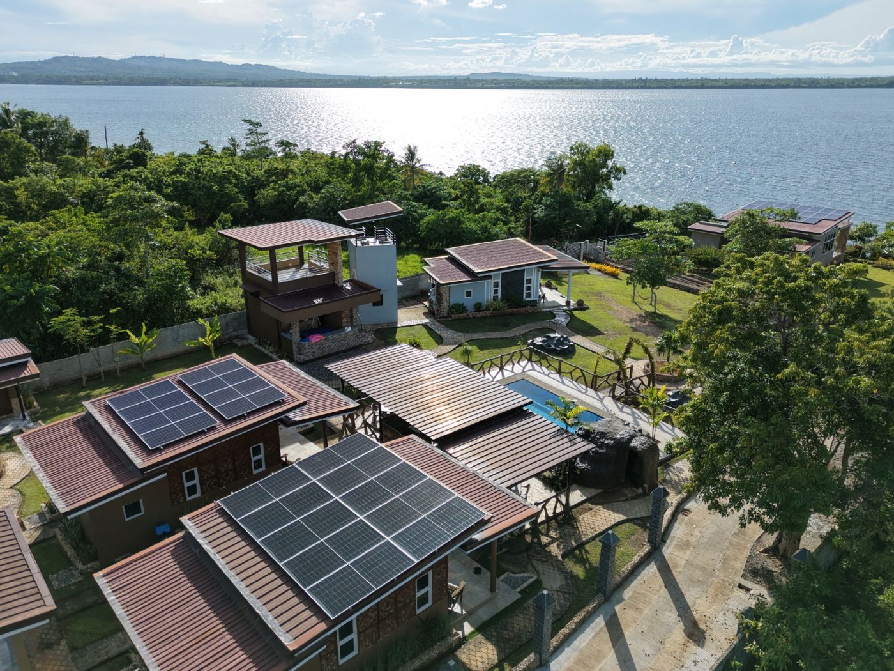
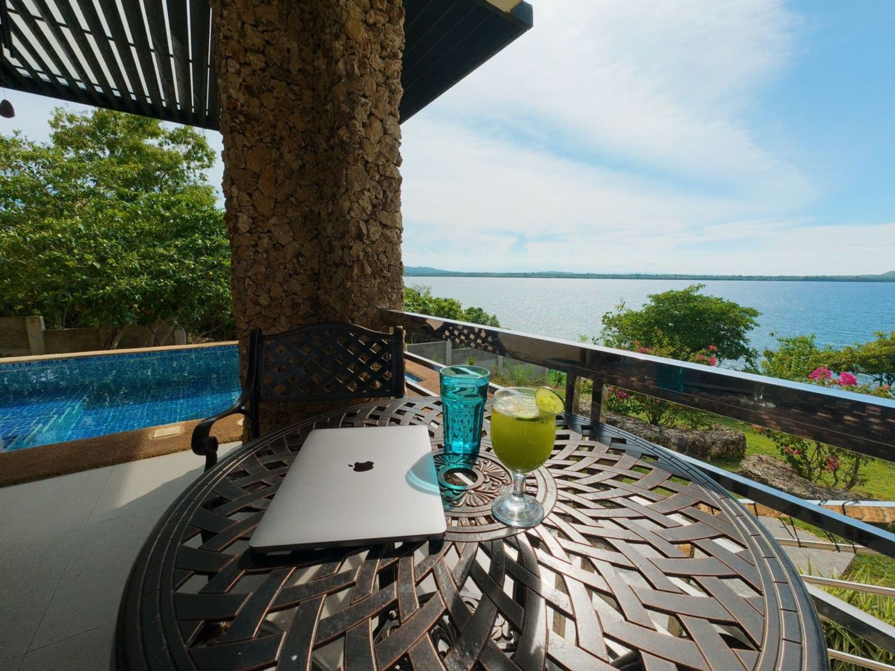

The gazebo on the cliff
Wrapped in tropical green on a west-facing cliff, it is the best seat for the sunset. Bring a laptop, a book or nothing at all.

A book in the hammock
Life at the village
Wake slow, work light, swim while the sun is high. Then find the gazebo on the cliff as gold spills across the sky. Six friendly dogs, a cottage by the sea, and nowhere else you'd rather be.

Wrapped in tropical green on a west-facing cliff, it is the best seat for the sunset. Bring a laptop, a book or nothing at all.

A desk in your cottage, the pergola by the pool, or the gazebo as the sun goes down.

A shared pool in the garden. Music stays low, so you can hear the birds.

Amakan 1 and 2 have solar panels as backup to the mains: steady power, a lighter footprint, and one less thing to think about.

Six friendly dogs live here, and they will want to say hello.

Rentals for exploring the island at your own pace.

Fast, steady internet in every cottage, good for video calls, uploads and the odd evening film.

Paddle along the coast over water so clear you can see the bottom.
A day here

Morning Coffee and email with the sea in view.

Midday A book in the hammock, out of the sun.

Afternoon Out on the water, under the cliff.

Sunset The cliff faces west, so the sun sets over the sea.

Dusk Some evenings, a fire by the sea.
Around the grounds
Coral stone, bamboo and a lot of green.